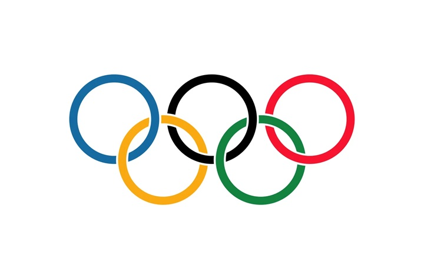
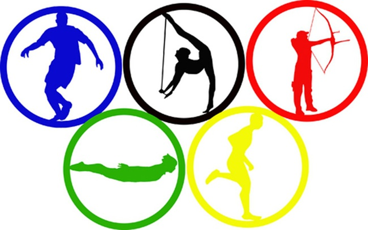

General information
The Summer Olympic Games, also known as the Summer Olympics or the Games of the Olympiad, is a major international multi-sport event normally held once every four years. The inaugural Games took place in 1896 in Athens, then part of the Kingdom of Greece, and the most recent was held in 2024 in Paris, France. This was the first international multi-sport event of its kind, organised by the International Olympic Committee (IOC) founded by Pierre de Coubertin. The tradition of awarding medals began in 1904; in each Olympic event, gold medals are awarded for first place, silver medals for second place, and bronze medals for third place. The Winter Olympic Games were created out of the success of the Summer Olympic Games, which are regarded as the largest and most prestigious multi-sport international event in the world.
History
Early years
The International Olympic Committee (IOC) was founded in 1894 when Pierre de Coubertin, a French pedagogue and historian, sought to promote international understanding through sporting competition. The first edition of The Olympic Games was held in Athens in 1896 and attracted just 245 competitors, of whom more than 200 were Greek, and only 14 countries were represented. Nevertheless, no international events of this magnitude had been organised before. Female athletes were not allowed to compete, though one woman, Stamata Revithi, ran the marathon course on her own, saying, "If the committee doesn't let me compete, I will go after them regardless". Women first participated officially in the 1900 Paris Games, with 22 women competing in five sports. Female participation has increased dramatically since then, with nearly half of the athletes in recent Games being women.
End of the 20th century
Following the Soviet Union's 1979 invasion of Afghanistan, 66 nations, including the United States, Canada, West Germany, and Japan, boycotted the 1980 Games held in Moscow. Eighty nations were represented at the Moscow Games – the smallest number since 1956. The boycott contributed to the 1980 Games being a less publicised and less competitive affair, which was dominated by the host country.
Start of the 21st century
In 2004, the Olympic Games returned to their birthplace in Athens, Greece.
At least $7.2 billion was spent on the 2004 Games, including $1.5 billion
on security. Michael Phelps won his first Olympic medals, tallying six gold
and two bronze medals. Pyrros Dimas, winning a bronze medal, became the
most decorated weightlifter of all time with four Olympic medals, three
gold and one bronze.
Although unfounded reports of potential terrorism
drove crowds away from the preliminary competitions at the first weekend of
the Olympics (14–15 August 2004), attendance picked up as the Games
progressed. A third of the tickets failed to sell, but ticket sales still
topped figures from the Seoul and Barcelona Olympics (1988 and 1992). IOC
President Jacques Rogge characterised Greece's organisation as outstanding
and its security precautions as flawless. All 202 NOCs participated at the
Athens Games with over 11,000 participants.
Recent Games
Rio de Janeiro in Brazil hosted the 2016 Summer Olympics, becoming the first South American city to host the Olympics, the second Olympic host city in Latin America, after Mexico City in 1968, as well as the third city in the Southern Hemisphere to host the Olympics after Melbourne, Australia, in 1956 and Sydney, Australia, in 2000. The preparation for these Games was overshadowed by controversies, including political instability and an economic crisis in the host country, health and safety concerns surrounding the Zika virus, and significant pollution in the Guanabara Bay. However, these concerns were superseded by a state-sponsored doping scandal involving Russian athletes at the Winter Olympics held two years earlier, which affected the participation of its athletes in these Games.
Sports
There has been a total of 42 sports, spanning 55 disciplines, included in the Olympic programme at one point or another in the history of the Games. The schedule has comprised 33 sports for the recent Summer Olympics (2020), with 32 sports planned for the next Summer Olympics (2024). The various Olympic Sports federations are grouped under a common umbrella association, called the Association of Summer Olympic International Federations (ASOIF).
Popularity of Olympic sports
The IOC divides Summer Olympic sports into five categories (A – E) based on popularity, gauged by six criteria: television viewing figures (40%), internet popularity (20%), public surveys (15%), ticket requests (10%), press coverage (10%), and number of national federations (5%). The category of a sport determines the share of Olympic revenue received by that sport's International Federation. Sports that were new to the 2016 Olympics (rugby and golf) have been placed in Category E.